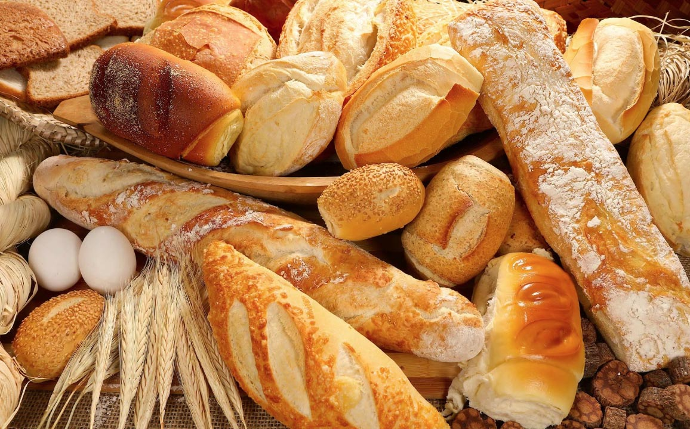
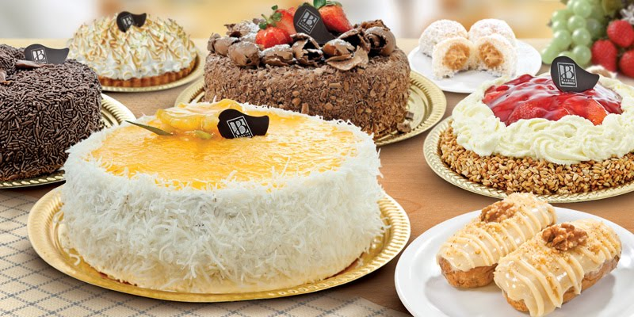

Temos um processo de fabricação 100% caseiro. Esse foi um dos maiores motivos que fizeram com que a Padaria Plus crescesse com as proporções que temos hoje. Temos um pão único de pura qualidade.
Uma viagem para a Itália nos fez conhecer alguns ingredientes que são essenciais para que a massa do bolo fique macia e gostosa. Hoje temos um produto incomparável.
Estamos localizados na Avenida Santos Aoz Nº 456
Nosso telefone: (99) 99999-9999
Estamos funcionando nos seguintes horários:
Segunda à sexta: 7h às 16h
Sábados e domingos: 7h às 13h
Feriados: 8h às 12h